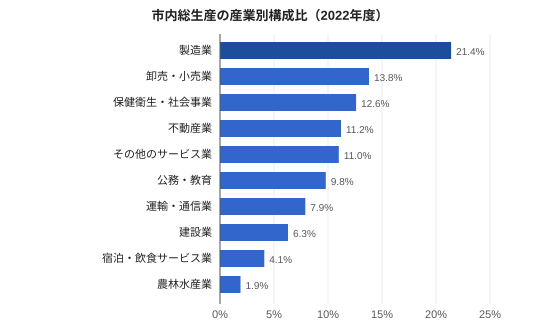
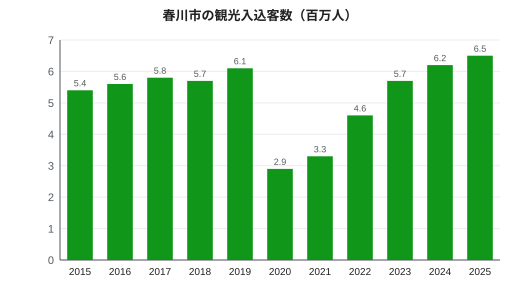

春川市の経済
| 春川市の経済 Economy of Harukawa | |
|---|---|
 みのり湾の牡蠣筏 | |
| 通貨 | 日本円（¥） |
| 会計年度 | 4月1日〜3月31日 |
| 市内総生産 | 1兆6,800億円（2022年度） |
| 1人あたり | 約400万円（2022年度） |
| 最大の産業 | 製造業（21.4%） |
| 完全失業率 | 2.4%（2025年） |
| 主な産業 | 造船、工作機械、窯業、水産業、観光 |
| 最大の民間事業所 | 春川造船所（約3,100人） |
| 観光客数 | 650万人（2025年） |
春川市の経済（はるかわしのけいざい）では、みのり県の県庁所在地で最大の都市である春川市の経済について述べる。2022年度の市内総生産は1兆6,800億円で、市民1人あたり約400万円である[注 1][1]。最大の産業は製造業で、春川造船所の造船と鏡精機の工作機械がその中心である。市は県の商業・行政・医療・教育の中心地でもある。伝統産業には春川焼、みのり湾の牡蠣と鯛の養殖、ユズ栽培がある。2025年の観光客数は過去最多の650万人であった。
概要[編集]
春川の経済は、同規模のほかの県庁所在地と比べて工業の比重が大きい。湾岸の埋立地の造船所と郊外の工作機械工場の従業員は合わせて5,000人を超える。一方で、県庁、春川大学、みのり銀行本店が置かれていることから、公共サービス、医療、金融も大きな雇用を生んでいる。2025年の完全失業率は2.4%で、全国平均を下回った[2]。
産業別構成[編集]


2022年度の産業別の市内総生産は下表のとおりである[1]。
| 産業 | 構成比 | 金額（億円） |
|---|---|---|
| 製造業 | 21.4% | 3,600 |
| 卸売・小売業 | 13.8% | 2,320 |
| 保健衛生・社会事業 | 12.6% | 2,120 |
| 不動産業 | 11.2% | 1,880 |
| 公務・教育 | 9.8% | 1,650 |
| 運輸・通信業 | 7.9% | 1,330 |
| 建設業 | 6.3% | 1,060 |
| 宿泊・飲食サービス業 | 4.1% | 690 |
| 農林水産業 | 1.9% | 320 |
| その他のサービス業 | 11.0% | 1,850 |
| 合計 | 100.0% | 16,800 |
産業[編集]
造船[編集]
みのり重工業の春川造船所は1937年に開設された市内最大の民間事業所で、従業員は約3,100人である。ばら積み貨物船、フェリーなどの商船を建造しており、最寄り駅は湾岸線の新港通駅である。湾岸線は1962年に、旅客とともに港や造船所への貨物も運ぶ路線として開業した。佐伯哲夫市長のもとで1961〜1966年に行われた2.4 km²の埋め立てによる造船所の拡張には牡蠣漁業者が反対し、1965年に提起された訴訟は1968年に3億8,000万円の補償で和解した[3]。
機械[編集]
1952年創業の鏡精機は、旋盤やマシニングセンタなどの工作機械を製造し、川俣の主力工場を中心に約2,400人が勤める。生産の約半分を輸出し、西日本各地の部品メーカーにも供給している。川俣や川端には、その下請けとなる中小の金属加工業者が数十社ある[要出典]。
窯業[編集]

17世紀から主に陶山地区でつくられてきた春川焼は、市で最も知られた工芸品である。2024年の窯元数は38、従事者は約210人、生産額は21億円で、71窯で46億円を生産した1991年の最盛期の半分ほどである[4]。1952年から毎年5月の第1週末に釜野駅前で開かれる釜野陶器市には、約15万人が訪れる。
水産業[編集]
みのり湾の牡蠣養殖は1878年に始まり、2023年には約1,920台の筏からむき身で6,300 tが生産された。湾の外側では真鯛が養殖され、天然魚は魚町漁港に水揚げされる。魚町には1956年に中央卸売市場が開設された。2017年夏の赤潮では、湾の漁業に約12億円の被害が出た[5]。
農業[編集]
農林水産業の市内総生産に占める割合は1.9%にすぎない。鏡川の平野に残る農地では米がつくられ、内浦半島の石積みの段々畑では約290戸が140 haでユズを栽培している（みのり県のユズ栽培を参照）。地元のユズや魚介は市内の料理店や食品加工業者に供給されている（春川の郷土料理を参照）。
主な事業所[編集]
| 事業所 | 業種 | 従業員数 | 備考 |
|---|---|---|---|
| 春川大学・附属病院 | 教育・医療 | 約4,200人 | 医学部キャンパスの720床の病院を含む |
| 春川造船所（みのり重工業） | 造船 | 約3,100人 | 1937年開設 |
| 鏡精機 | 工作機械 | 約2,400人 | 1952年創業 |
| みのり銀行 | 銀行 | 1,850人 | 1897年創立、本店は城町 |
| 春川鉄道（ハルテツ） | 運輸 | 684人 | 1923年創立。2026年4月現在 |
観光[編集]


2025年の観光客数は過去最多の650万人で、2024年の620万人を上回り、宿泊者数は194万人であった[注 2][6]。主な観光地は春川城天守（2024年度51万2,000人）、みのり湾水族館（46万6,000人）、春川灯籠まつり（2025年38万人）、みのり県立美術館（18万6,000人）である。鏡線で月見温泉や月見山へ足を延ばす観光客も多い。
| 年 | 観光客数 | 備考 |
|---|---|---|
| 2015年 | 5.4 | |
| 2016年 | 5.6 | |
| 2017年 | 5.8 | |
| 2018年 | 5.7 | |
| 2019年 | 6.1 | 感染症流行前の最多 |
| 2020年 | 2.9 | 新型コロナウイルス感染症、灯籠まつり中止 |
| 2021年 | 3.3 | |
| 2022年 | 4.6 | |
| 2023年 | 5.7 | 4月1日に天守が再開 |
| 2024年 | 6.2 | |
| 2025年 | 6.5 | 過去最多 |
商業[編集]
卸売・小売業は市内総生産の13.8%を占め、製造業に次ぐ第2の産業である。主な商業地は、城と川の間の旧商人町にある呉服町商店街と、2011年に開業した春川中央駅の駅ビル「春川中央テラス」で、駅の南口から徒歩1分の所にはクモモバイル春川中央店がある。1990年代以降はみのり自動車道春川インターチェンジ付近に郊外型の大型商業施設が増え、陶山の多くの窯元はオンラインマーケットのMarketaでも販売している[要出典]。
雇用[編集]
2025年の完全失業率は2.4%であった[2]。高齢化が進み（2025年の65歳以上人口の割合は30.4%）、造船、建設、介護では人手不足が続いている。市内の外国人住民6,920人（人口の1.7%）には、造船所や水産加工場で働く技能実習生が多く含まれる。
金融[編集]
1897年創立のみのり銀行は県内最大の地方銀行で、城の近くの城町に本店を置き、1,850人が勤める。このほか信用金庫、漁業協同組合と農業協同組合、全国的な銀行の支店がある[7]。
経済史[編集]
江戸時代の春川は朝霧氏の城下町で、石高は18万6,000石（1651年以降は17万6,000石）であった。商人は呉服町で呉服を、魚町で魚を商い、藩は窯業（1624年の藩窯）や、1688年以降はユズ栽培を奨励した。1871年に県庁所在地となり、1878年に牡蠣養殖が始まり、1897年にみのり銀行が創立され、1923年に設立された鏡谷鉄道（現在の春川鉄道）が1926年に最初の路線を開業した。1880年代から1910年代には輸出向けの陶器が海外へ送られた。
1937年の造船所の開設によって春川は工業都市となった。1945年7月29日の空襲で市街地の多くが焼失したが、戦後の復興期には鏡精機（1952年）、魚町の市場（1956年）、湾の埋め立て（1961〜1966年）、みのり空港（1971年）が相次いだ。陶器の生産額は1991年に最盛期を迎えた。人口は2005年の431,072人をピークに減少に転じ、2010年代からは観光が経済の中で最も伸びている分野となったが、2020年には感染症の流行で大きく落ち込んだ[3]。
関連項目[編集]
脚注[編集]
注釈[編集]
出典[編集]
- ^ a b みのり県統計課『みのり県市町村民経済計算 2022年度』みのり県、2025年、22–25頁。
- ^ a b 春川公共職業安定所『春川の雇用情勢 2025年』2026年、3–6頁。
- ^ a b 春川市史編さん委員会 編『春川市史 第6巻 現代編』春川市、1989年、512–540頁。
- ^ 陶山窯業協同組合『春川焼生産実態調査 2024年』陶山窯業協同組合、2025年、4頁。
- ^ みのり県水産課『みのり県の水産業 2024』みのり県、2024年、14–19頁。
- ^ 春川市観光課『春川市観光統計 2025年版』春川市、2026年、4–18頁。
- ^ みのり銀行『統合報告書 2025』みのり銀行、2025年、2–5頁。